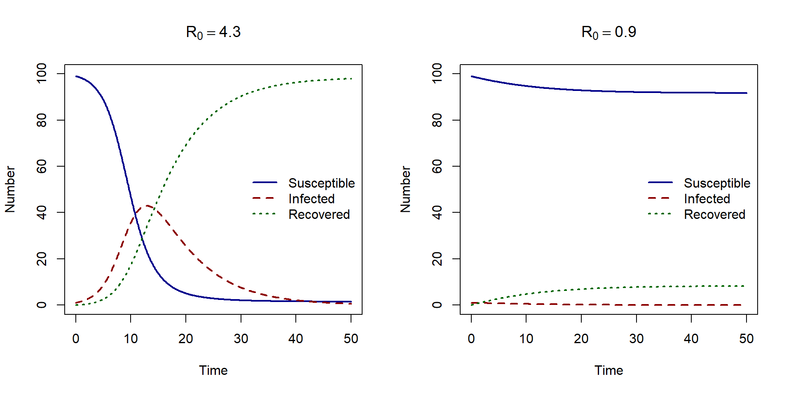

Basic reproduction number
In this lesson we introduce the basic reproduction number (\(R_0\)) an important concept in modelling epidemics.
\(R_0\) is the average number of cases caused by one infectious individual in a entirely susceptible population. As \(R_0\) is the average number of secondary cases, we have the following threshold:
- \(R_0 > 1\) then the first infectious case infects more than 1 secondary case, and hence the epidemic will ‘take off’
- \(R_0 < 1\) the first infectious case infects less than 1 secondary case (on average) and so the epidemic dies out.
What about if \(R_0 = 1\)? Then one infectious individual will go on to infect just one other, and so the disease will be endemic, i.e. the prevalence will remain at the same level.
How do we find the expression for \(R_0\)?
For the SIR model, we can find an expression \(R_0\) using the model assumptions. For complex models, there is advanced mathematical method that can be used to find an analytical expression for \(R_0\) from a system of ODEs called the next generation matrix method.
In this course we will focus on understanding how to interpret \(R_0\) and its relationship with other epidemiological values.
The SIR model
If \(R_0\) is the average number of cases on infectious individual infects, then our expression for \(R_0\) will be a product of the rate at which the infectious individual infects susceptible multiplied by the duration of time in which they can infect.
\[R_0 = \mbox{transmission rate} \times \mbox{duration of infection}\]
Given we have just one infected person, the rate of transmission will be \(\beta S_0\), where \(S_0\) is the initial proportion of susceptibles. But remember that we are looking at an entirely susceptible population so we can assume \(S_0=1\).
The duration of infection will be the average amount of time an individual remains infectious. this is the inverse of the recovery rate. therefore the duration of infection is \(1/\gamma\).
For SIR model, \(R0 = \frac{\beta}{\gamma}\).
Let’s check that the numerical solutions behave as expected when we have \(R_0 < 1\) and \(R_0 > 1\). In the plots below we use the following values for \(\beta\) and \(\gamma\),
pars1 <- c(beta = 0.6, gamma = 0.14) pars2 <- c(beta = 0.6, gamma = 0.65)
When \(R_0 = 4.3\), the epidemic takes of and when \(R_0 = 0.9\), we do not have an epidemic.
Frequency and density dependent transmission
Does our expression for \(R_0\) change when we use numbers instead of proportions? Recall that we write \(R_0\) as:
\[R_0 = \mbox{transmission rate} \times \mbox{duration of infection}\]
In frequency dependent transmission, our transmission rate is just \(\beta\) and in density dependent transmission we have \(\beta' S_0\), where \(S_0\) is the initial number of susceptibles.
We are looking at an entirely susceptible population, therefore \(N = X_0\) and so we have:
\(\beta N\) for density dependent transmission .
Putting this all together we have,
- frequency dependent transmission \(R_0 = \frac{\beta}{\gamma}\)
- density dependent transmission \(R_0 = \frac{\beta' N}{\gamma}\).
When using numbers, the expressions for \(R_0\) are different for either frequency or density dependent transmission. For density dependent transmission, the population size (\(N\)) is in the expression for \(R_0\). This means that for the same transmission rate and recovery rate, there will be cases when an epidemic will or won’t take off due to the size of the population.
Effective reproduction number
The basic reproduction ratio is a useful concept for understand whether an epidemic will occur when an infectious individual enters a completely susceptible population. But what about populations where there is existing immunity?
The effective reproductive ratio (\(R_E\)) is the average number an infected person goes on to infect in a population where not everyone is susceptible.
\(R_E = S R_0\) where \(s\) is the proportion of the population susceptible to infection. If \(R_E < 1\) the infection in the population will die out.
The plots below show the predicted epidemic from an SIR model and the effective reproductive ratio over time. Note that the time at which \(R_E\) becomes less than 1, is the time at which the epidemic reaches it’s peak and starts the proportion of infected starts to decrease.
The effective reproductive ratio is very useful for understanding the current risk of infection and can be used to calculate the ‘herd immunity’ threshold as we will see in the next lesson.
Herd immunity threshold
We are interested in the proportion of individuals that need to be immune so that the infection dies out in the population.
Say that the proportion of population that is immune \(p\), how many need to be immune in order for infection to die out?
If \(p\) are immune, then \(1-p\) are susceptible.
We know that infection will die out if the effective reproductive ratio is less than 1 $R_E < 1 $, where \(R_E = s R_0\). \[ \begin{aligned} R_E &< 1 \\ s R_0 &< 1 \mbox{ subsitute $R_E = s R_0$}\\ (1-p) R_0 &< 1 \mbox{ subsitute $s = (1-p)$}\\ (1-p) &< \frac{1}{R_0} \mbox{ rearrange}\\ 1- \frac{1}{R_0} & < p \end{aligned} \] The proportion of the population that needs to be immune for an infection to die out is \(1-1/R_0\).
For example,if \(R_0 = 2\), the proportion of the population that needs to be immune is \(1-1/2 = 1/2\) of the. For higher \(R_0\), a higher proportion of the population needs to be immune. For \(R_0 = 5\), \(1-1/5 = 4/5\), so 80% of the population needs to immune.
This is referred to as herd immunity threshold. The idea of herd immunity is that only a proportion of the population need to be immune, through vaccination for example, to protect those individuals who are not immune.
Exercise
- Assuming frequency dependent transmission in an SIR model, what is the value of \(R_0\) if \(\beta = 0.12\) and an average infectious period of 26 days (to 2 decimal places)?
- Assuming density dependent transmission in an SIR model, if \(R_0 = 1.75\), \(\gamma = 1/7\) and the total population size is \(N =250\) , what is the value of the transmission rate \(\beta’\)?
- If \(R_0\) = 1.25, what proportion of the population needs to be immune for the effective reproduction number to be less than 1?
Solution
beta <- 0.12
gamma <- 1/26
beta / gamma[1] 3.12R0 <- 1.75
N <- 259
gamma <- 1 / 7
R0 * gamma / N[1] 0.000965251R0 <- 1.25
1 - 1 / R0[1] 0.2